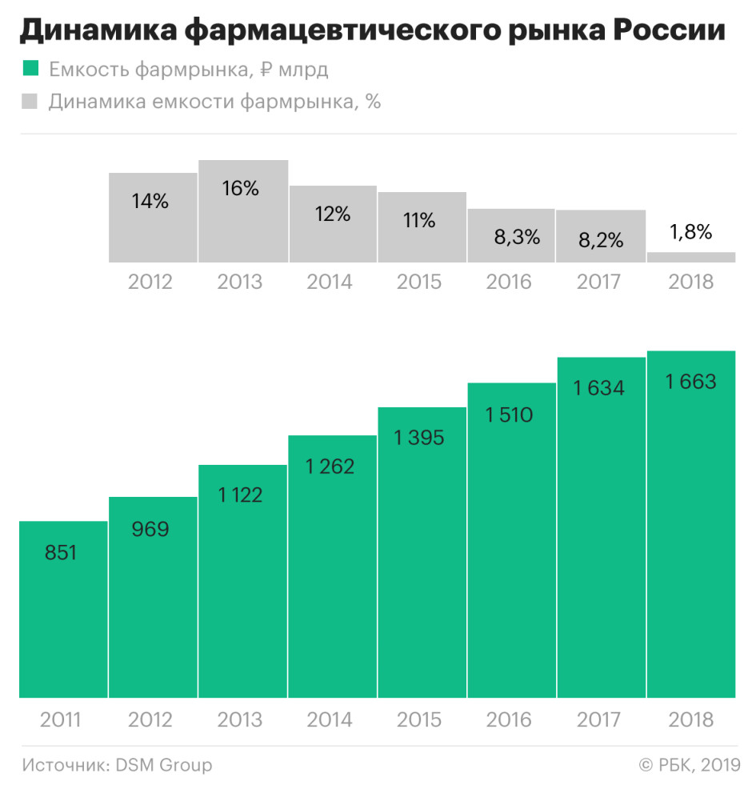

 Фармацевтические препараты стали неотъемлемой частью современного здравоохранения.Они используются для лечения широкого спектра заболеваний и заболеваний, от простуды до опасных для жизни состояний.Использование фармацевтических препаратов позволило поставщикам медицинских услуг улучшить результаты пациентов, снизить уровень смертности и повысить общее качество жизни пациентов.Тем не менее, использование фармацевтических препаратов не без проблем и противоречий. Фармацевтические препараты играют решающую роль в современном здравоохранении.Они используются для лечения широкого спектра заболеваний и заболеваний, от острых состояний, таких как инфекции и травмы, до хронических заболеваний, таких как диабет и сердечно -сосудистые заболевания.Фармацевтические препараты также используются в профилактической медицине, такой как вакцины, для предотвращения распространения инфекционных заболеваний.
Госпитальные препараты различных фармакологических групп: витамины, обезболивающие и противовоспалительные средства, антигипертензивные лекарственные средства, антигистаминные лекарственные средства, ангиопротекторные лекарственные средства и другие...